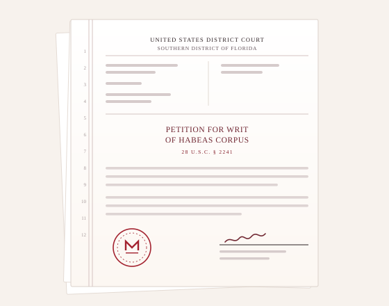

Someone you love is detained. Here is what happens next.
Alguien que usted quiere está detenido. Esto es lo que sigue.
We locate detained clients, move for bond, and take unlawful detention to federal court. If a family member is in ICE custody, call (727) 269-3797.
Localizamos a los clientes detenidos, solicitamos fianza y llevamos la detención ilegal a la corte federal. Si un familiar está detenido por ICE, llame al (727) 269-3797.
Do this before anything else
Haga esto antes que nada
Write down the detained person’s full legal name, date of birth and country of birth, and their A-number if you have it. Do not sign anything and do not accept voluntary departure on their behalf. Then call us.
Escriba el nombre legal completo de la persona detenida, su fecha de nacimiento y país de nacimiento, y su número A si lo tiene. No firme nada ni acepte la salida voluntaria en su nombre. Luego llámenos.
Two questions decide whether someone goes home.
Dos preguntas deciden si una persona vuelve a casa.
At a custody redetermination hearing an immigration judge asks whether the person is a danger to the community, and whether they will appear for future hearings. Everything we file is built to answer those two questions with evidence rather than assurances.
En una audiencia de redeterminación de custodia, el juez de inmigración pregunta si la persona representa un peligro para la comunidad y si comparecerá a las audiencias futuras. Todo lo que presentamos está diseñado para responder esas dos preguntas con pruebas, no con promesas.
Before that, we test the government’s premise. Detention is often labelled mandatory when it is not: the classification depends on the exact statute of conviction, the sentence actually imposed, when the offence occurred and how the person came into custody. We read the record of conviction line by line, because that document decides more than any argument we could make about it.
Antes de eso, cuestionamos la premisa del gobierno. A menudo se clasifica la detención como obligatoria cuando no lo es: esa clasificación depende del estatuto exacto de la condena, la sentencia realmente impuesta, la fecha del delito y la forma en que la persona quedó bajo custodia. Leemos el registro de condena línea por línea, porque ese documento decide más que cualquier argumento que pudiéramos hacer sobre él.
We have won bond for clients the government argued were ineligible for release, including clients with felony records.
Hemos obtenido fianza para clientes que el gobierno consideraba no elegibles para la liberación, incluidos clientes con antecedentes por delitos graves.
What goes into a bond packageQué contiene un expediente de fianza
- ✓Sponsor and residencePatrocinador y domicilio
A sworn affidavit from the person who will house the client, with lease or deed, utility bills and photographs of the home.Una declaración jurada de quien alojará al cliente, con contrato de arrendamiento o título, facturas de servicios y fotografías del domicilio.
- ✓Ties to the communityVínculos con la comunidad
Employment letters, tax returns, school records for children, medical needs of dependants, church and employer letters.Cartas de empleo, declaraciones de impuestos, registros escolares de los hijos, necesidades médicas de dependientes, cartas de la iglesia y del empleador.
- ✓The criminal record, addressed head-onEl historial penal, abordado de frente
Certified dispositions, proof of completed conditions, rehabilitation and treatment records — presented before opposing counsel presents them.Disposiciones certificadas, prueba de condiciones cumplidas, registros de rehabilitación y tratamiento — presentados antes de que los presente la parte contraria.
- ✓The relief that followsEl alivio que sigue
Evidence that a genuine path to relief exists, because a client with a real case has a reason to come back to court.Pruebas de que existe una vía real de alivio, porque un cliente con un caso sólido tiene motivos para volver a la corte.

Habeas corpus in federal district court
Hábeas corpus en la corte federal de distrito
Immigration detention is not supposed to be indefinite. When an agency holds a client beyond what the law permits, denies bond without a lawful basis, or keeps someone in custody with no realistic prospect of removal, the remedy is not another request to the agency — it is a petition for a writ of habeas corpus, filed in the United States District Court and decided by a federal judge.
La detención migratoria no debe ser indefinida. Cuando una agencia detiene a un cliente más tiempo del que la ley permite, niega la fianza sin base legal o mantiene a alguien bajo custodia sin una posibilidad real de deportación, el remedio no es otra solicitud a la agencia — es una petición de hábeas corpus, presentada en la Corte de Distrito de los Estados Unidos y resuelta por un juez federal.
We have filed and won habeas petitions on behalf of detained clients. It is demanding litigation on a short clock, and it is one of the reasons this firm takes detention cases that others decline.
Hemos presentado y ganado peticiones de hábeas corpus a favor de clientes detenidos. Es un litigio exigente y con plazos cortos, y es una de las razones por las que esta firma acepta casos de detención que otras rechazan.
What families ask us first
Lo que las familias nos preguntan primero
Can someone with a felony conviction still get bond?¿Puede obtener fianza alguien con una condena por delito grave?
Sometimes, yes. The government frequently argues that a conviction makes a person subject to mandatory detention, but that argument turns on the precise statute of conviction, the sentence imposed and the date — not on the label “felony”. We have won bond for clients the government said could not be released. Every case requires its own analysis of the record of conviction.
A veces, sí. El gobierno suele alegar que una condena somete a la persona a detención obligatoria, pero ese argumento depende del estatuto exacto de la condena, la sentencia impuesta y la fecha — no de la etiqueta «delito grave». Hemos obtenido fianzas para clientes que el gobierno consideraba no liberables. Cada caso requiere su propio análisis del registro de condena.
How much will the bond be?¿De cuánto será la fianza?
The statutory minimum is $1,500 and there is no maximum. The judge sets the amount based on flight risk and danger to the community, which is exactly what a well-built bond package is designed to address. We cannot promise a figure, and you should be cautious of anyone who does.
El mínimo legal es de $1,500 y no hay máximo. El juez fija el monto según el riesgo de fuga y el peligro para la comunidad, que es precisamente lo que un buen expediente de fianza aborda. No podemos prometer una cifra, y debe desconfiar de quien la prometa.
How quickly can a bond hearing happen?¿Qué tan rápido puede realizarse una audiencia de fianza?
Once we file, a custody redetermination hearing is usually scheduled within days to a few weeks, depending on the court and the detention facility. This is why calling early matters: the sooner we have the file, the sooner the package is ready.
Una vez que presentamos la solicitud, la audiencia de redeterminación de custodia suele programarse en días o pocas semanas, según la corte y el centro de detención. Por eso importa llamar pronto: cuanto antes tengamos el expediente, antes estará listo el paquete.
What is an A-number, and where do I find it?¿Qué es el número A y dónde lo encuentro?
The alien registration number is a seven- to nine-digit number beginning with the letter A. It appears on immigration notices, work permits, residence cards and on any paperwork given to the family at the time of arrest. It is the fastest way to locate someone in custody, but we can search without it.
El número de registro de extranjero tiene entre siete y nueve dígitos y comienza con la letra A. Aparece en los avisos de inmigración, permisos de trabajo, tarjetas de residencia y en cualquier documento entregado a la familia al momento del arresto. Es la forma más rápida de localizar a una persona detenida, pero podemos buscarla sin ese número.
What if bond is denied?¿Qué pasa si niegan la fianza?
A denial can be appealed to the Board of Immigration Appeals, and circumstances that change can support a renewed request. Where detention itself has become unlawful or unreasonably prolonged, we file a petition for a writ of habeas corpus in federal district court — a separate proceeding before a federal judge, and one we have used successfully.
Una negación puede apelarse ante la Junta de Apelaciones de Inmigración, y las circunstancias que cambian pueden sustentar una nueva solicitud. Cuando la detención en sí se ha vuelto ilegal o se ha prolongado sin razón, presentamos una petición de hábeas corpus en la corte federal de distrito — un proceso aparte ante un juez federal, y uno que hemos usado con éxito.
Nothing on this page is legal advice about your case, and prior results do not guarantee a similar outcome. Bond eligibility depends on facts that only a review of the record can establish.
Nada en esta página constituye asesoría legal sobre su caso, y los resultados anteriores no garantizan un resultado similar. La elegibilidad para fianza depende de hechos que sólo se pueden establecer revisando el expediente.